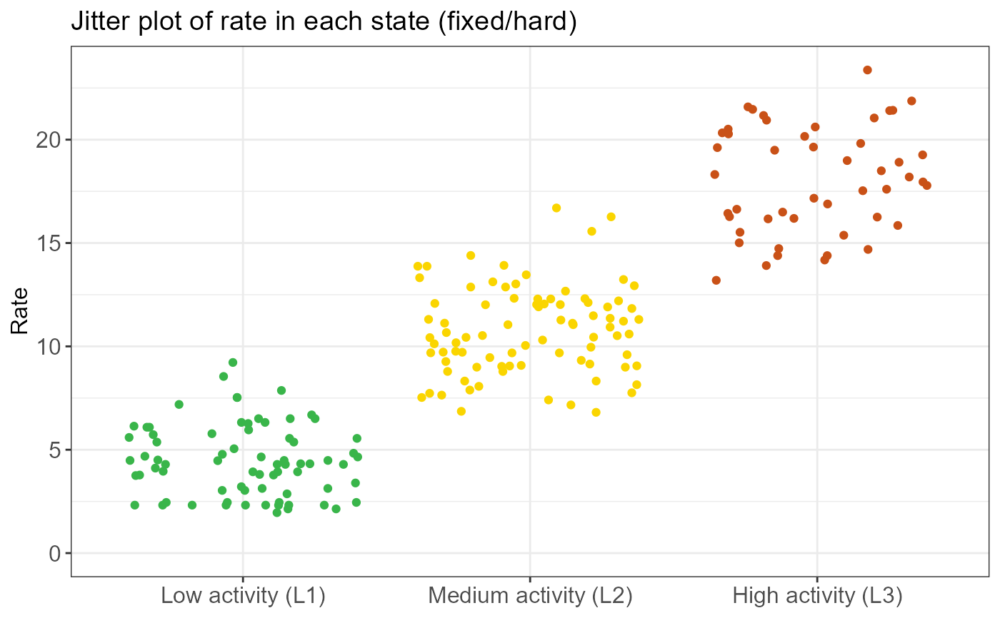
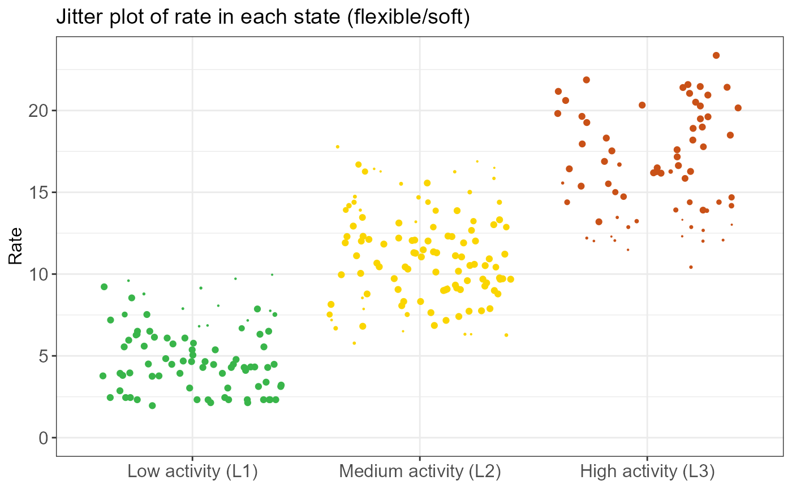
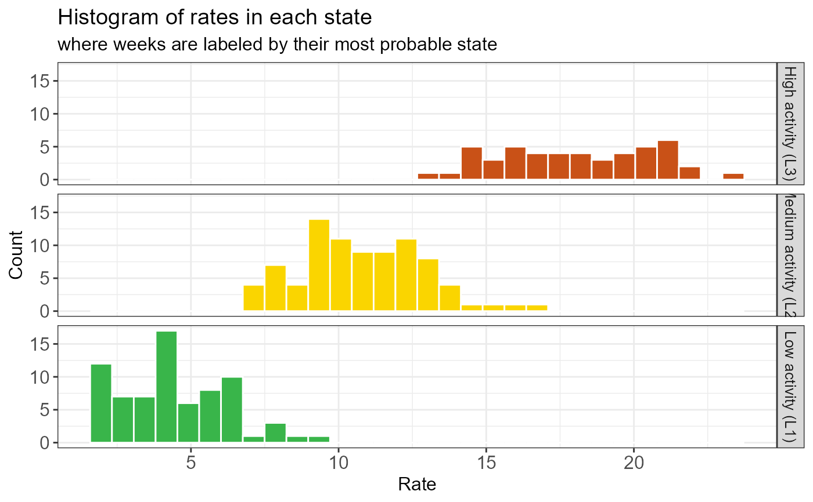
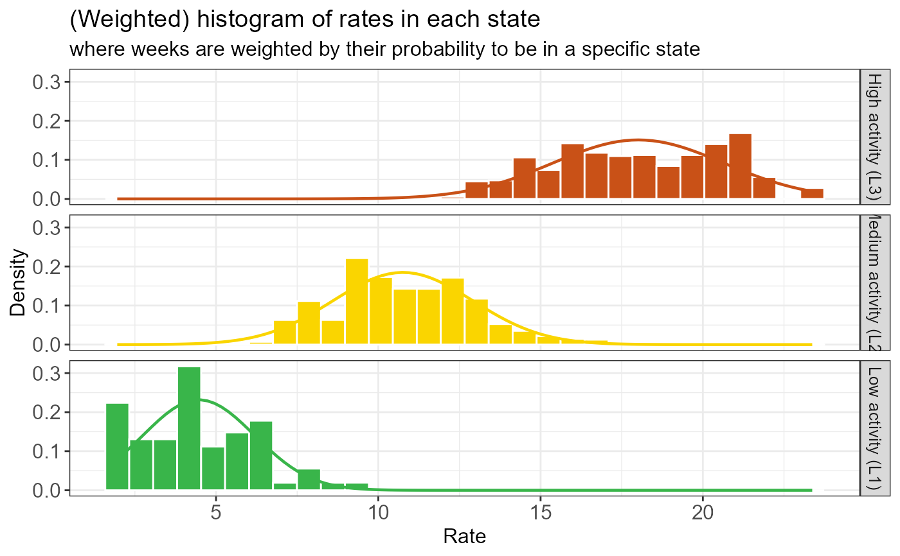
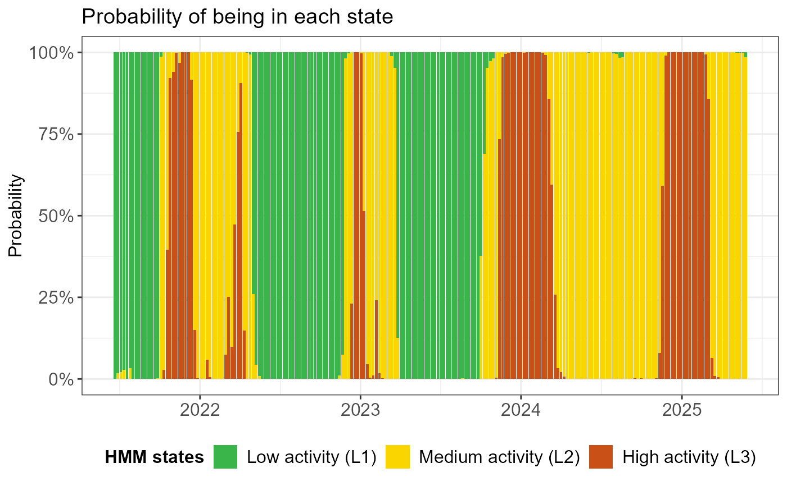
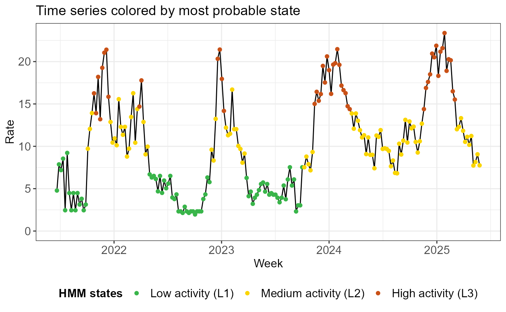
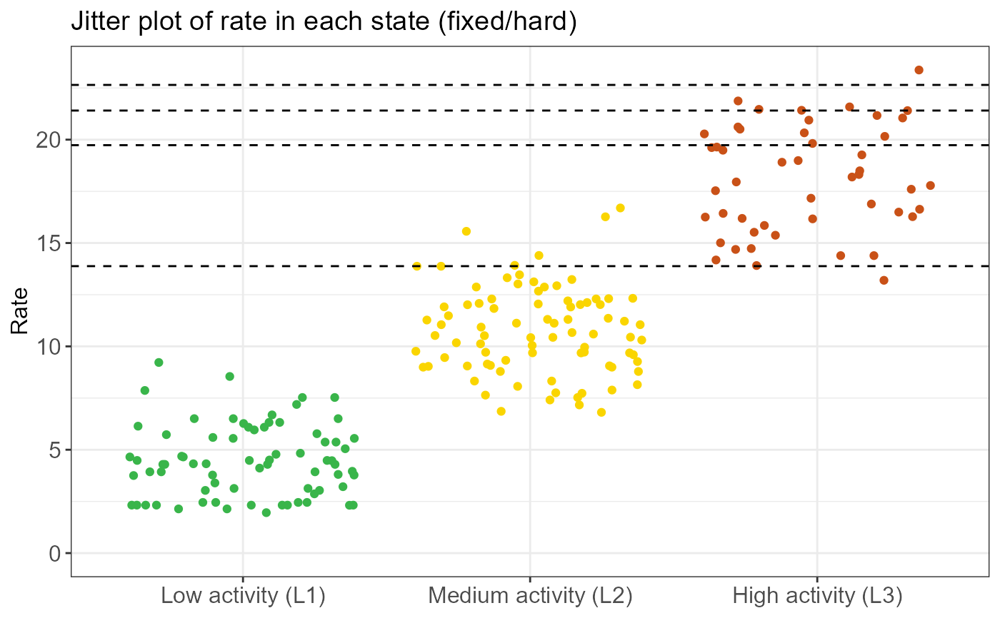
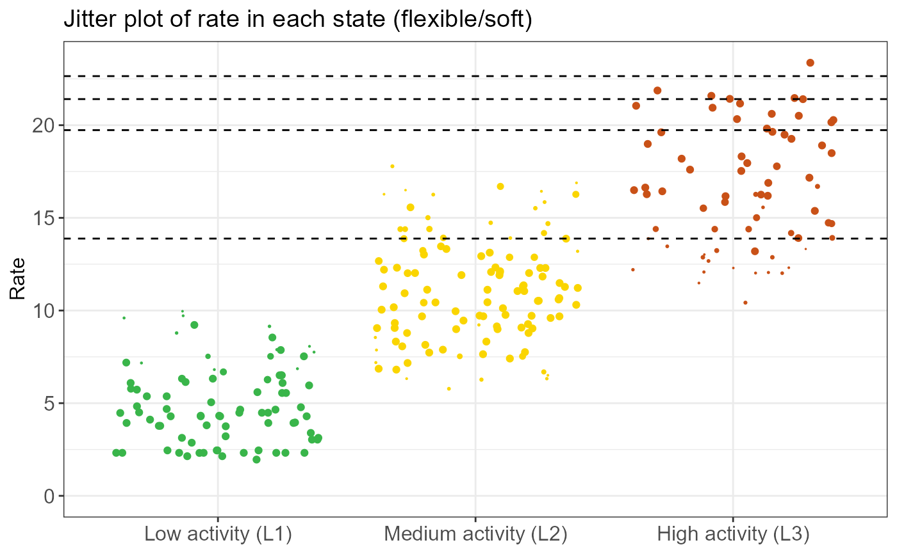
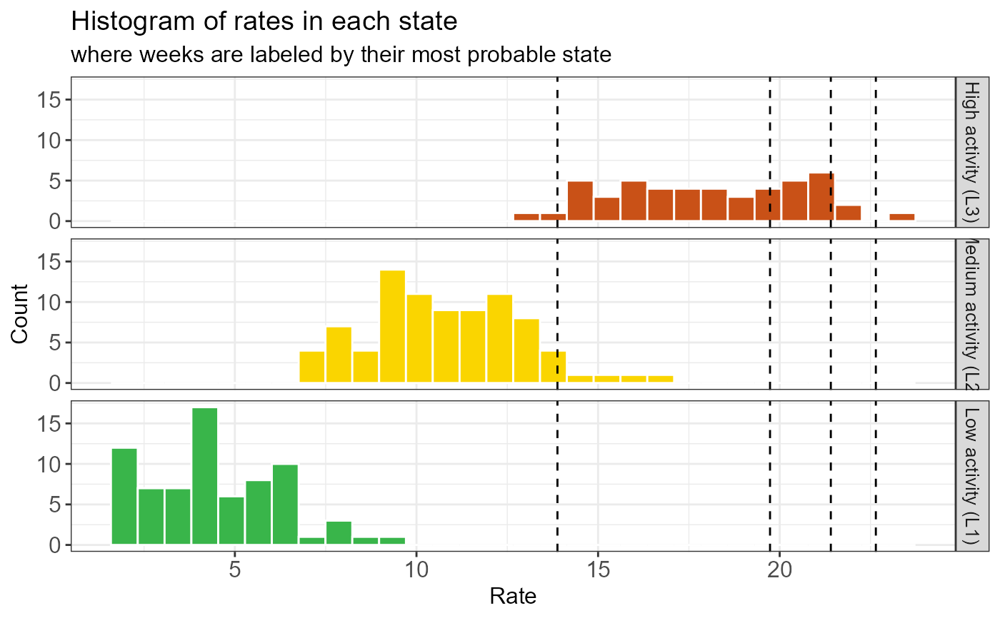
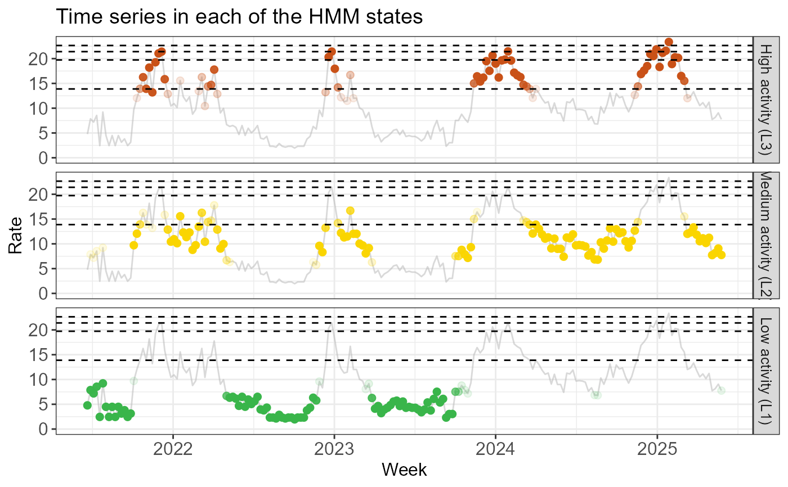

This function fits a hidden Markov model (HMM) to time series data using either Gaussian (for rates) or binomial (for percentages) distributions.
Arguments
- obs_data
A
data.framecontaining anindexcolumn (Date or integer). Additional required columns depend ontypeandseasonal:If
type = "rate": Must contain a numericratecolumn. This represents the intensity, incidence or activity level of the surveillance signal (e.g., cases per 100,000 population).If
type = "perc": Must contain integernumanddenomcolumns.numis the numerator (e.g., the number of positive lab tests or symptomatic patients), anddenomis the denominator or total sample size (e.g., total tests performed or total clinical consultations).If
seasonal = TRUE: Must contain aseasoncolumn. The subseries in each season is treated as an independent time series.
- n_states
An integer. The number of hidden states (2 to 4).
- type
A character string. Either
"rate"(Gaussian) or"perc"(binomial).- seasonal
A logical. If
TRUE, the model prevents transitions between different seasons, treating them as independent sequences.
Value
An object of class epiquest_hmm. This is a list containing:
data: The inputobs_datawith added columns for the predicted state and posterior probabilities.states: Summary statistics (mean and SD, or probability) for each hidden state.transition: The estimated transition matrix between states.n_states: Number of states in the model.type: The data type used for the fit.
Details
The function uses the depmixS4 package to estimate parameters
using the Baum-Welch algorithm. For type = "perc", the model accounts for the
varying precision of proportions by using the raw counts (num and denom). After
fitting, hidden states are sorted and renamed from L1 (lowest
intensity) to Ln (highest intensity) based on the estimated mean.
The posterior probabilities are 'local' probabilities. See run_out_of_sample_decoding
for more information.
Missing Data
Missing values (NA) are permitted in the response columns (rate
or num/denom). depmixS4 handles these by allowing
state transitions to occur as usual while ignoring the missing observation
in the likelihood calculation.
However, if the surveillance signal is interrupted for extended periods
(e.g., for systems that do not operate during low intensity months), it is
strongly recommended to use seasonal = TRUE.
Examples
# Fit a 3-state HMM to (continuous) rate data
fit <- run_hmm(df_sari_be, n_states = 3, type = "rate")
# Check state information
summary(fit)
#>
#> ========================================================
#> EpiQUEST hidden Markov model summary
#> ========================================================
#>
#> --- Model configuration --------------------------------
#> Type: Continuous (Gaussian)
#> Number of states: 3
#> Seasonal: FALSE
#> Number of observations: 206
#>
#> --- Estimated state parameters -------------------------
#> State Mean Standard deviation
#> L1 4.468 1.722
#> L2 10.758 2.159
#> L3 18.011 2.641
#>
#> --- Transition matrix ----------------------------------
#> State ToL1 ToL2 ToL3
#> FromL1 95.73% 4.27% 0.00%
#> FromL2 2.51% 91.01% 6.48%
#> FromL3 0.00% 11.32% 88.68%
#>
#> --- State distribution (observations) ------------------
#> State Total weight Proportion
#> L1 72.6 35.2%
#> L2 85.2 41.4%
#> L3 48.2 23.4%
#>
#> Note: Weights are posterior probabilities.
#> ========================================================
# Visualize state information
create_hmm_plots(fit)







# Compute thresholds using the highest state (L3) as the epidemic state
# By default, epidemic_state_indices is the highest state
thresh <- run_threshold_computation(fit)
# Visualize theshold information
summary(thresh)
#>
#> ==============================================================
#> EpiQUEST threshold summary
#> ==============================================================
#>
#> --- Model configuration --------------------------------------
#> Type: Continuous (Gaussian)
#> Number of states: 3
#> Seasonal: FALSE
#> Number of observations: 206
#> State(s) defined as epidemic: L3
#>
#> --- Calculated QUEST thresholds ------------------------------
#> Level Quantile Value
#> Low 5% 13.881
#> Medium 70% 19.734
#> High 90% 21.408
#> Very high 99% 22.647
#>
#> Note: Thresholds calculated using weighted ECDF
#> based on posterior probabilities of epidemic state(s).
#> ==============================================================
# Visualize theshold information
create_threshold_plots(thresh)





